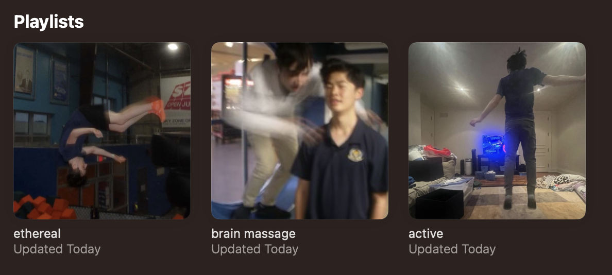

playlist covers
ok, this is a bit of an unserious website entry but i'm quite proud and thankfully (shoutout to angelo) for this, and i must share it somewhere.
after such a long time of having a bland, boring apple music profile (sorry spotify users), i've finally CUSTOMIZED my profile and added playlists and it's so fun, like the vibe of each playlist/cover is too real
the girl right in front of me kept taking out her phone and filming ME? like i'm not sure if that's a compliment or not but i kept trying to hide a little bit, but overall it was an interesting experience
so the "triangle hearts" arrives near the end of the film, when the whole group i came with was taking photos in front of the little movie poster
we're all doing hearts with our hands (you know, like whatever), until matthew pulls out this... i don't want to say heart because it isn't. let me show you
i don't even know what i'm getting at to be quite honest, i just love the vibe... special shoutout to my ethereal playlist, it's my favourite thing and maybe my fav genre (if that's what you'd call it?) of music, like ugh just lying down, hearing nothing but the music that makes you feel like you're ascending towards the heavens is just so beautiful